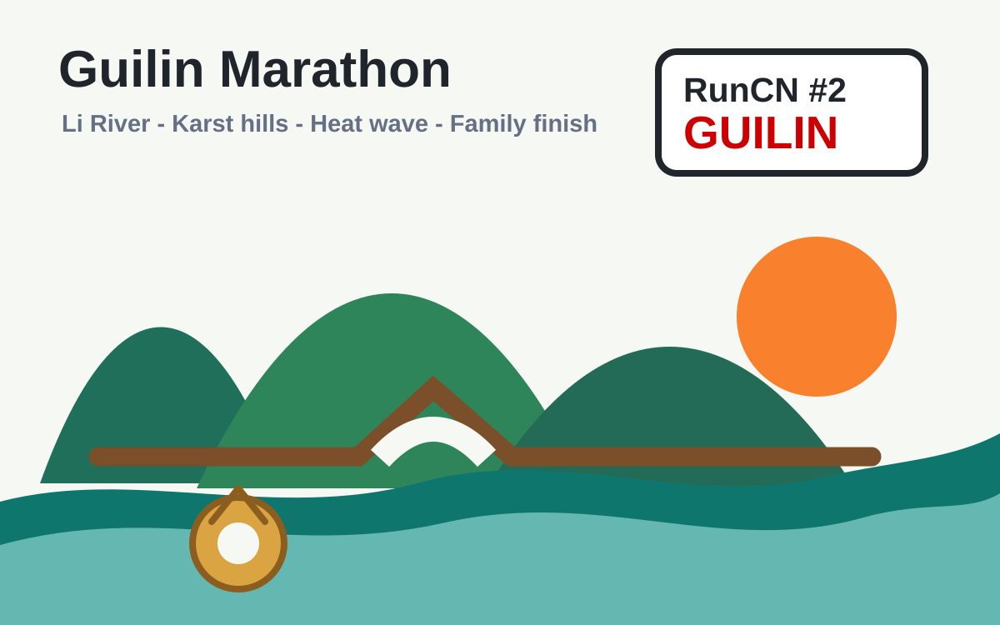

Run50 Stories · Chinese
中文故事
这里放 Run50 之外但同属跑步旅程的中文长文。以后新的比赛、旅行和训练故事都可以继续加到这里。
RunCN #第1站｜襄阳马拉松
从珞珈山到汉江边，回国第一跑意外跑进四小时。婚礼、武汉、襄阳古城和一条节奏友好的赛道。
长文图记
阅读 →

RunCN #第2站｜桂林马拉松
热浪滚滚的一场桂林马拉松。漓江、穿山、七星、象鼻山，还有爸妈和姨妈在终点等我。
长文图记
阅读 →